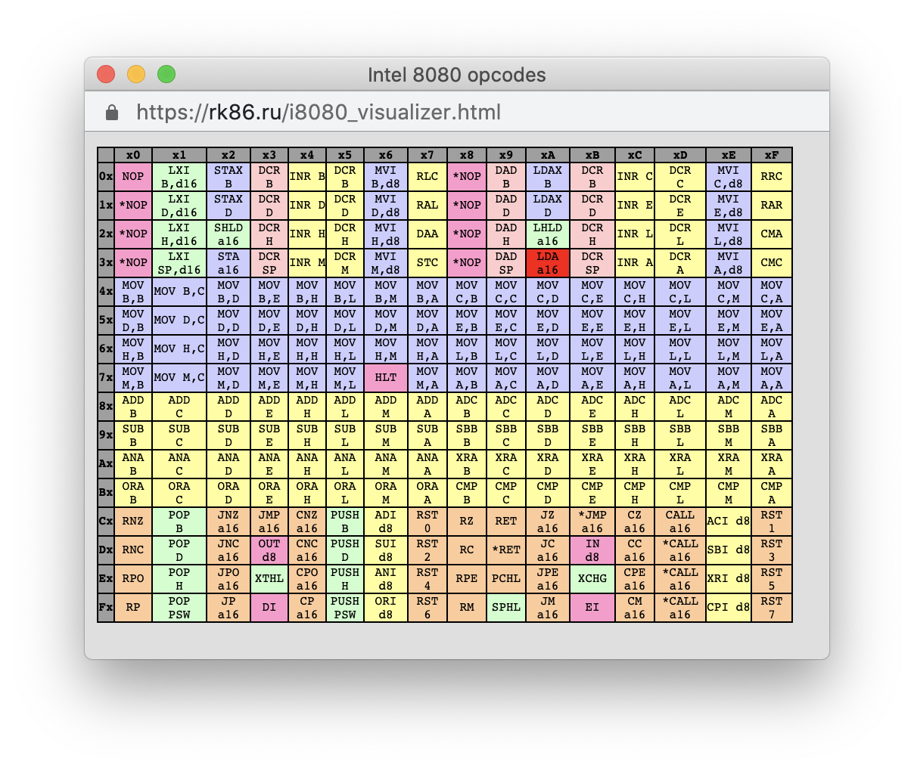
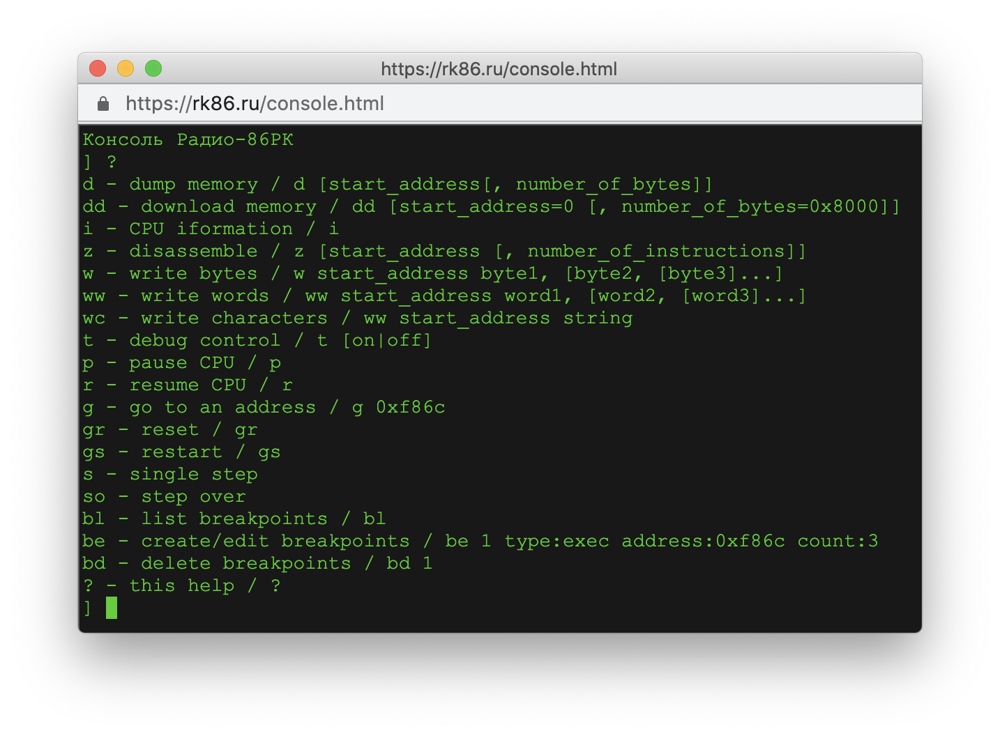

Данный документ находится в разработке.
Об ошибках и проблемах можно сообщить через трекер. Вопросы, предложения и замечания можно обсудить на форуме.
2021.03.14: новая реализация полноэкранного режима через Fullscreen API , эмуляция кнопки РУС/ЛАТ перенесена c ESC на F10, так как теперь ESC используется для выхода из полноэкранного режима
2021.03.11: загрузка локальных файлов
2021.03.10: световое перо
2021.03.09: загрузка внешних файлов в эмулятор
2021.03.01: эмуляция записи на магнитную ленту
2021.01.27: поддержка звука
2012.10.30: visualizer и режим полного экрана
2012.10.23: эмулятор переехал на отдельный домен rk86.ru
2012.10.22: отладочная консоль
2012.10.14: онлайновый каталог игр и остальных программ со скринами и описаниями
Селектор справа от надписи "Built-in:" позволяет выбрать файл из встроенного каталога эмулятора. После того, как файл выбран, его можно либо запустить кнопкой "Run", либо загрузить без запуска кнопкой "Load". После загрузки, файл можно запустить командой "G".
Кнопка "Choose file" позволяет выбрать файл с локального диска. После выбора файла справа от кнопки появится имя выбранного файла. После того, как файл выбран, его можно либо запустить кнопкой "Run", либо загрузить в без запуска кнопкой "Load". После загрузки, файл можно запустить командой "G".
Примечание: Если селектор файла, загруженного с локального диска, содержит имя файла, то есть какой-то файл был выбран и загружен, то кнопки "Run" и "Load" будут работать именно с этим файлом, а не с файлом из селектора "Built-in".
Чтобы кнопки "Run" и "Load" работали с файлом из селектора "Built-in" (встроенный каталог эмулятора), необходимо очистить селектор "Local" путем нажатия кнопки "X".
С локального диска можно загружать как двоичные файлы, так и файлы в текстовом формате.
Имя файла может быть либо локальным, либо сетевым.
Локальное имя стоит только из имени и расширения, например, RESCUE.GAM. В этом случае файл "RESCUE.GAM" берется из встроенного каталога файлов эмулятора.
Сетевое имя представляет собой полный URL файла. В этом случае файл скачивается из сети по указанному URL.
Имя вшенего файла необходимо задать в параметре "fle=" URL эмулятора.
Пример запуска эмулятора с локальным именем файла: https://rk86.ru/index.html?file=RESCUE.GAM
Пример запуска эмулятора с полным сетевым именем файла: https://rk86.ru/index.html?file=https://gist.githubusercontent.com/begoon/f4a4e82968d7f581668f218bc17f9ec6/raw/sokoban.bin
Если расширение файла ".bin" или отсутсвует, то файл рассматривается без заголовка РК в виде кода E6, начального и конечного адресов. Такой файл загружается с адреса 0000.
Исключение составляют файлы, имя которых начинается с "mon", например, "mon32.bin". Такие файлы загружаются и запускаются с адреса "0x10000 - 'длина файла'". Например, файл "mon32.bin" длиной 0800 (2048) будет загружен и запущен с адреса F800.
Если у файла есть расширениe (.GAM, .PKI, .RK, .RKR), то этот файл разбирается с учетом заголовка РК: байт E6, начальный адрес (2 байта) и конечный адрес (2 байта). Длина вычисляется из начального и конечного адресов. Стартовым адресом является начальный адрес.
Если загружаемый файл является текстовым, то адрес загрузки и стартовый адрес могут быть заданы в тегах заголовка, "start" и "entry" соотвественно.
По умолчанию, загружаемые файлы рассматриваются как двоичные. Если же файл начинается со строки "!#rk86" (байты [35, 33, 114, 107, 56, 54] или [0x23, 0x21, 0x72, 0x6B, 0x38, 0x36]), то далее этот файл рассматривается как шестнадцатеричный дамп.
Например:
#!rk86
0000 E6 10 00 20 00 AA BB CC 11 22 33 44 55 66 77 88
0010 11 22 33 44 55 66 77 88
Первые четыре символа каждой строки, показывающие смещение, являются чисто информативными и не используются для разбора. Оставшаяся часть каждой строки рассматривается как последовательность шестнадцатеричных кодов (от 00 до FF). Количество кодов в строке может быть любое. Все коды будут рассмотрены как единая последовательность байт.
В данном примере, это будет последовательность "E6 10 00 20 00 AA BB CC 11 22 33 44 55 66 77 88 11 22 33 44 55 66 77 88".
Строки, начитающиеся с '#', является комментариями и игнорируются при разборе байт.
После преобразования всех строк в последовательность байт, данный файл уже рассматривается как обычный двоичный файл, правила загрузки которого описаны ранее.
Тестовые файл могут иметь специальный тэги, заданные в строках-комментариях.
Например:
#!rk86 !name=file.rk !start=1000 !entry=1005
0000 E6 10 00 20 00 AA BB CC 11 22 33 44 55 66 77 88
0010 11 22 33 44 55 66 77 88
Теги можно задавать на разных строках.
Тег "!name" задает имя загружаемого файла. Если тег не задан, что имя файла берется из URL. Некоторые хостинги, например, pastebin.pl, не позволяют контролировать URL, поэтому имя (и расширение) файла в окончании URL может быть произвольным, но имя файла, а точнее его расширение, определяют типа файла: либо двоичный, если расширение ".bin" или пустое, либо файл в формате ленты РК. Тип файла определяет, как файл будет разобран и загружен. Тег "!name" позволяет задать имя и расширение файла вне зависимости от URL.
Тег "!start" позволяет задать адрес загрузки файл для двоичных файлов (файлов с расширениям ".bin" или пустым расширением). Для файлов в формате ленты РК данный тег значение не имеет. Адрес загрузки файлов в формате РК всегда берется из заголовка файла.
Тег "!entry" позволяется задать адрес запуск файла. Данный тег работает и для двоичных файлов, и для файлов формате ленты РК.
исходный текст загружаемого файла
Примечание: Файл sokoban.bin является двоичным, то есть не имеет заголовка ленты РК. Имя файла "sokoban.bin" сохранено в URL хостинга, поэтому файл распознается как двоичный и использование тега "name" в данном случае не является необходимым.
исходный текст загружаемого файла
Примечание: В данном случае файл "volcano.rkr" является файлом в формате ленты РК, поэтому его расширение ".rkr" обязательно. Хостинг сохранил имя "volcano.rkr", поэтому для корректной загрузки файла использование тега "!name=volcano.rkr" не является необходимым, хотя и задано для примера.
Показательным использованием тегов может быть загрузка Монитора mon32x4.bin.
Это расширенный Монитор, которые занимает не два килобайта с F800 по FFFF, а четыре: с F000 по FFFF. Стартовым адресом этого монитора должен оставаться адресс F800.
Для загрузки этого Монитора через текстовый режим, необходимые задать следующие теги:
#!rk86 !name=mon32x4 !start=f000 !entry=f800
исходный текст загружаемого файла
Некоторые хостинги не позволяют скачивать выложенные файлы со страниц, которые пытаются скачать файл с помощью javascript. Это так называемая CORS защита.
Обойти проблему можно воспользовавшись CORS прокси. CORS прокси добаляет в запрос необходимые заголовки, и браузер перестает жаловаться на CORS.
Например, если воспользоваться cors-filter.herokuapp.com, то путь к файлу в адресе эмулятора будет такой:
Эмулятор отслеживает обращения к порту 8002 в режиме вывода. Этот порт используется в РК для записи данных на ленту. Если начинается серия команд записи в этот порт, эмулятор запоминает результаты, и когда серия заканчивается (команды записи прекращают поступать), эмулятор выгружает результаты записи в виде файла.
Например, если в Мониторе выполнить команду "OF800,F8FF", после после окончания вывода первых 256 байт Мониторе на ленту, эмулятор сохранит эти 256 байты в виде файла rk86-tape.bin.
Эмуляция звука работает через Web Audio API. Эмулятор ловит обращения на команды EI/DI и так рассчитывает период звука. Расчеты ведутся по тикам i8080, то есть частоты вычисляются на 100% точно, и от плавающей скорости эмулятора ничего не зависит.
Звук проверен на Chrome 88+, Firefox 85+, Safari 14+, Opera 74+.
Сохранить текущее состояние памяти эмулятора можно двумя способами:
Visualizer показывает исполняемые в данный момент команды процессора. Запускается кнопкой "V". Для полного выключения вижуалайзера надо полность перезагрузить страницу эмулятора.
Кнопка "Full screen" переводит эмулятор в режим полного экрана. Выход из режима полного экрана - ESC.
Полноэкранный режим проверен на Chrome 88+, Firefox 85+, Safari 14+, Opera 74+.
Описание команд отладочной консоли находится в разработке

Сравниваешь бинари дампов (программой конечно, не руками), на предмет увеличивающейся или уменьшающейся последовательно в какой-то ячейке. Пробуешь ставить брекпоинты по адекватным кандидатам и находишь, в каком месте ячейка меняется. Все!
Для сравнения файлов можно, например, воспользоваться программой cmp.py
Пример простого цикла разработки.
Допустим, есть ваша программа rk86_example.asm:
org 0
lxi h, msg
call 0f818h
jmp 0f86ch
msg db 'EXAMPLE', 0dh, 0ah, 0
Создаете репозиторий rk86-example.
Кладете туда исходник и создаете Makefile:
TARGET=rk86_example
RUN=https://rk86.ru/index.html?file=
all: build hex
build:
zasm --asm8080 -l0 $(TARGET).asm
hex:
python rk86_hex.py -i $(TARGET).rom -o $(TARGET).bin
run:
open $(RUN)https://raw.githubusercontent.com/begoon/rk86-example/main/$(TARGET).bin
clean:
-rm $(TARGET).rom
Далее цикл разработки выглядит так:
Для данного "Makefile" требуется ассемблер zasm и программа rk86_hex.py
Проверялось на Mac.
cd your/development/folder
git clone git@github.com:Megatokio/zasm.git
git clone git@github.com:Megatokio/Libraries.git
cd zasm
make
./zasm
Должно вывести что-то вроде:
zasm - 8080/z80/z180 assembler (c) 1994 - 2021 Günter Woigk.
version 4.4.8, 2021-03-09, for Unix-MacOSX.
Световое перо эмулируется через мышь. Положение мыши на экране задает положение пера. Левая кнопка мыши определяет, активно перо или нет.
Чтение из ячейки С001 в бите 4 (маска 0001000) возвращает 1, если перо активно (леваа кнопка мышь нажата), 0 в противном случае.
Запись 60h в ячейку С001 активизирует считывание положения пера. Последующие две операции чтения из ячейки C000 возвращают сначала положения пера по горизонтали (от 0 до 77), а потом положение по вертикали (от 0 до 29).
Конец документа